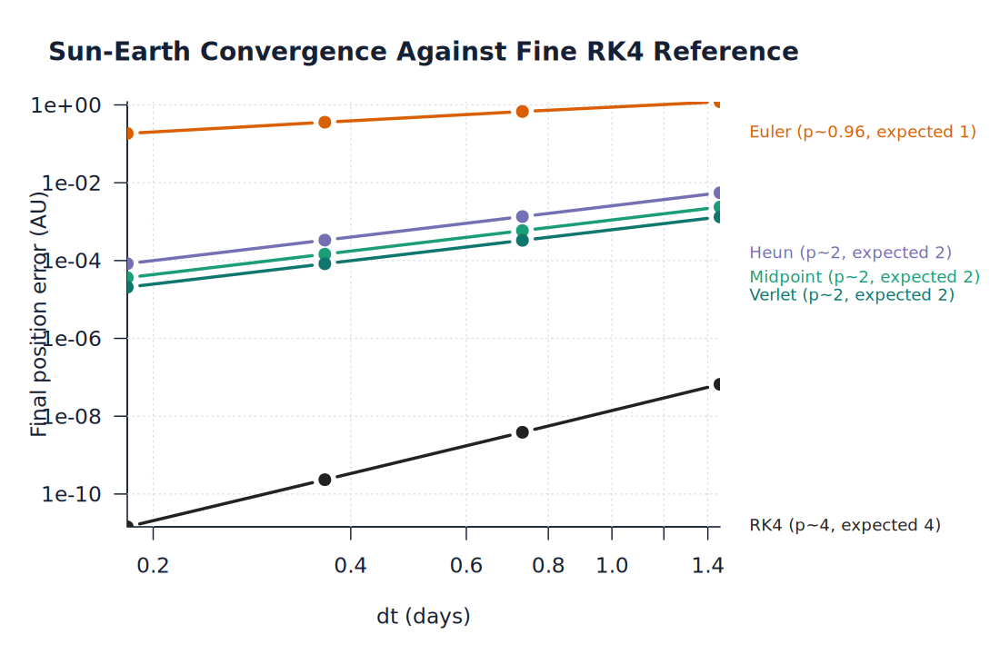

Euler
A first-order baseline that makes accumulated position and energy error visible in orbital problems.
Numerical methods and orbital simulation
A numerical simulation suite comparing Euler, Midpoint, Heun, RK4, and Velocity Verlet methods across projectile motion, two-body orbits, and three-body gravitational systems.

Implemented solvers
The suite keeps the problem setup fixed while swapping the integration rule, making long-horizon stability and conservation behavior easy to compare.
A first-order baseline that makes accumulated position and energy error visible in orbital problems.
A second-order Runge-Kutta method that improves local accuracy with a half-step slope estimate.
A predictor-corrector method that averages initial and corrected slopes for second-order convergence.
A fourth-order reference method used for high-accuracy trajectories and convergence comparisons.
A symplectic method included for its strong qualitative behavior in conservative orbital systems.
Simulation domains
The examples start with simple trajectories and scale up to special three-body solutions, restricted three-body cases, and multi-body conservation checks.
Near-surface trajectory examples for method behavior in a compact setup.
Sun-Earth and Earth-Moon systems with energy and angular momentum diagnostics.
General, restricted, and special solutions including figure-8 and Lagrange cases.
Multi-body validation cases for long-run energy and angular momentum drift.
Generated analysis
The generated output is preserved under analysis/generated/,
including the narrative results page, dashboard, artifact browser, CSV
summaries, documentation, and example views.

Compare observed order, final position error, and runtime behavior against a fine RK4 reference.

Inspect generated two-body, three-body, restricted three-body, and n-body plots alongside their source artifacts.
Package and source
The project is implemented primarily in R, with static Pages output generated from the solver code and analysis scripts.